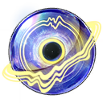

추천 광추
오직 향만이 변함없이
격파 특수효과, 필살기로 적이 받는 피해 증가
효과 자세히
격파 특수효과 +60%. 필살기 명중 → 적 피해 취약 +10%(2턴), 자신의 격파 특수효과 150% 이상이면 추가 +8%.
등가교환
아군 에너지 지원
효과 자세히
턴 시작 시 랜덤으로 현재 에너지 백분율이 50% 미만인 다른 아군의 에너지를 16pt 회복
수술 후의 대화
필살기 회전
효과 자세히
에너지 회복효율이 16% 증가하고, 필살기 발동 시 치유량이 24% 증가
무엇이 진실인가
격파 특수효과와 일반 공격 후 자기 치유
효과 자세히
격파 특수효과가 48% 증가. 일반 공격 발동 후, 장착한 캐릭터는 HP 최대치의 4%+800pt만큼 HP를 회복
내일의 내일이 올 때까지
치유량·HP 조건 피해 지원
효과 자세히
치유량이 24% 증가. 아군의 현재 HP 백분율이 50% 이상일 시 가하는 피해가 20% 증가
추천 유물
곤충 재앙을 잠재우는 철기군 4 · 아공간 이상 사물 수용소 2
- 머리
 주옵션HP부옵션속도 · 격파 특수효과 · 공격력% · HP%
주옵션HP부옵션속도 · 격파 특수효과 · 공격력% · HP% - 손
 주옵션공격력부옵션속도 · 격파 특수효과 · 공격력% · HP%
주옵션공격력부옵션속도 · 격파 특수효과 · 공격력% · HP% - 몸통
 주옵션치유량 보너스부옵션속도 · 격파 특수효과 · 공격력% · HP%
주옵션치유량 보너스부옵션속도 · 격파 특수효과 · 공격력% · HP% - 다리
 주옵션속도부옵션격파 특수효과 · 공격력% · HP%
주옵션속도부옵션격파 특수효과 · 공격력% · HP% - 구체

주옵션공격력%부옵션속도 · 격파 특수효과 · HP% - 매듭
 주옵션에너지 회복효율부옵션속도 · 격파 특수효과 · 공격력% · HP%
주옵션에너지 회복효율부옵션속도 · 격파 특수효과 · 공격력% · HP%
이 조합을 추천하는 이유
철기군 → 격파 특수효과 150%/250%에서 격파/슈퍼 격파 방어력 무시. 수용소 → 전투 속도 145부터 팀 격파 특수효과 +18%.
태양과 번개의 여전사 4 · 겁화 연등의 연마궁 2
- 머리
 주옵션HP부옵션속도 · 격파 특수효과 · 공격력% · HP%
주옵션HP부옵션속도 · 격파 특수효과 · 공격력% · HP% - 손
 주옵션공격력부옵션속도 · 격파 특수효과 · 공격력% · HP%
주옵션공격력부옵션속도 · 격파 특수효과 · 공격력% · HP% - 몸통
 주옵션치유량 보너스부옵션속도 · 격파 특수효과 · 공격력% · HP%
주옵션치유량 보너스부옵션속도 · 격파 특수효과 · 공격력% · HP% - 다리
 주옵션속도부옵션격파 특수효과 · 공격력% · HP%
주옵션속도부옵션격파 특수효과 · 공격력% · HP% - 구체
 주옵션공격력%부옵션속도 · 격파 특수효과 · HP%
주옵션공격력%부옵션속도 · 격파 특수효과 · HP% - 매듭
 주옵션에너지 회복효율부옵션속도 · 격파 특수효과 · 공격력% · HP%
주옵션에너지 회복효율부옵션속도 · 격파 특수효과 · 공격력% · HP%
이 조합을 추천하는 이유
여전사 → 동료 치유 후 속도 +6% 및 팀 치명타 피해 +15%. 연마궁 → 화염 약점 적 공격 후 격파 특수효과 +40%.
이 정도면 잘 키웠다
동일 파티·광추 기준 · 조건 [*]
| 스탯 | 추천 스탯 | 준종결 | 종결 |
|---|---|---|---|
| 속도 [*] 스킬·필살기와 부원 행동을 늘립니다. 수용소는 전투 속도 145 이상. | 151 | 160 | 파티 순서 조정 |
| 격파 특수효과 [*] 승급 행적의 공격력·치유 증가와 철기군 발동 기준. | 100% | 150% | 250% 전투 선택 |
| 공격력 [*] 격파 특수효과에 따른 행적의 공격력 전환을 별도로 고려. | 2,000 | 2,100 | 2,200+ |
육성 단계의 기준
Lv.80 · 5성 유물 +15. Prydwen 참고 범위와 발동 조건을 바탕으로 나눈 편집 목표입니다.
성혼과 추천 돌파
성혼 1은 강인성 감소 속도와 파티 격파 피해를 높이는 첫 투자입니다. 성혼 2는 필살기로 팀 격파 특수효과를 더합니다.
1약점 격파 효율 +50%·격파된 적 방어력 −20%추천
영사의 약점 격파 효율이 50% 증가. 적 유닛의 약점이 격파될 시 해당 적의 방어력이 20% 감소
2필살기 후 팀 격파 특수효과 +40%(3턴)추천
필살기 발동 시 모든 아군의 격파 특수효과가 40% 증가. 지속 3턴
3필살기 +2 · 특성 +2
필살기 +2 · 특성 +2
4부원 행동마다 HP 최저 아군 추가 치유
부원 행동 시 현재 HP가 가장 낮은 아군의 HP를 영사 공격력의 40%만큼 회복
5전투 스킬 +2 · 일반 공격 +1
전투 스킬 +2 · 일반 공격 +1
6부원 유지 중 모든 적 저항 −20%·부원 추가 4타
부원이 필드에 있을 시 모든 적의 모든 속성 저항이 20% 감소. 부원이 공격 시 추가로 피해를 4회 가하고, 피해를 가할 때마다 랜덤 단일 적에게 영사 공격력의 50%만큼 화염 속성 피해와 5pt의 강인성 감소 수치를 가한다. 강인성 수치가 0을 초과하고 화염 속성 약점을 보유한 목표를 우선으로 선택한다
추천 파티


기본 운영과 행적
기본 운영
전투 스킬로 부원을 불러 행동을 앞당기세요. 격파 직전 필살기를 사용하면 격파 피해 취약을 걸고 부원이 즉시 움직입니다.
행적 우선순위
필살기 > 특성 > 전투 스킬 > 일반 공격. 공격력과 격파 특수효과를 연결하는 행적을 해금하세요.
아하 속도 계산기 →기준과 출처 · 2026-11-25
4.7 · 한국어 게임 데이터 및 Prydwen 육성 분석